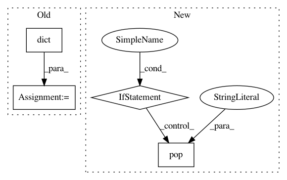

93dcb7c1001fa25adc27fa516c170a3e78d38da6,dataset/models/tf/layers/conv_block.py,,conv_block,#Any#Any#Any#Any#Any#Any#Any#Any#Any#Any#Any#Any#Any#Any#Any#,82
Before Change
args = dict(fused=True, axis=axis, training=is_training)
elif layer == "r":
args = dict(pooling_ratio=kwargs.get("pooling_ratio", 1.4142),
pseudo_random=kwargs.get("pseudo_random", False),
overlapping=kwargs.get("overlapping", False),
data_format=data_format)
elif C_GROUPS[layer] == "p":
args = dict(pool_size=pool_size, strides=pool_strides, padding=padding,
data_format=data_format)
After Change
skip_layer = True
elif C_GROUPS[layer] == "P":
if layer == "P":
pool_op = kwargs.pop("global_pool_op", "max")
elif layer == "V":
pool_op = "mean"
args = dict(pool_op=pool_op, data_format=data_format)
elif layer == "m":
args = dict(data_format=data_format)
In pattern: SUPERPATTERN
Frequency: 3
Non-data size: 4
Instances
Project Name: analysiscenter/batchflow
Commit Name: 93dcb7c1001fa25adc27fa516c170a3e78d38da6
Time: 2017-12-11
Author: rhudor@gmail.com
File Name: dataset/models/tf/layers/conv_block.py
Class Name:
Method Name: conv_block
Project Name: DistrictDataLabs/yellowbrick
Commit Name: b3256666df69e645159c8ef91fb3e4bfd826b8de
Time: 2018-06-05
Author: lwgray@gmail.com
File Name: yellowbrick/classifier/classification_report.py
Class Name: ClassificationReport
Method Name: score
Project Name: open-mmlab/mmdetection
Commit Name: f64c95616677f90aa79b556251d2c426ef4d07dc
Time: 2018-12-30
Author: thangvubk@gmail.com
File Name: mmdet/models/utils/norm.py
Class Name:
Method Name: build_norm_layer